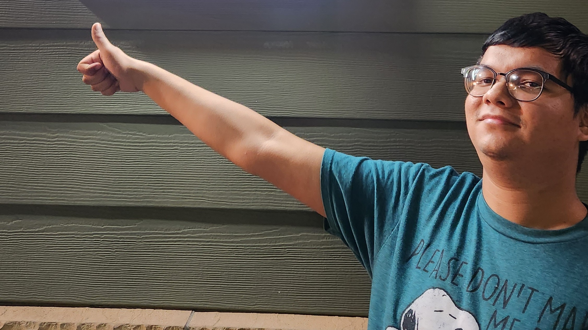

Past Revival Productions
What can be said about Jahin Alam that hasn't been said already? We often think of Jahin as our marketing manager, he knows what a wide audience would like to see. He loves big blockbusters and romantic comedies, and prefers it when horror movies are PG-13 as apposed to R. Jahin doesn't strive to weird-out his audience, or make them overly uncomfortable, and as a result, he has the potential to be the most successful out of all of us. Jahin brought Jonathan Cabeen and Solomon Ernsr together at Alum Creek Park one evening to make Day in the Park, and the short was improvised in a few hours without a script.
Actor
Writer and Director